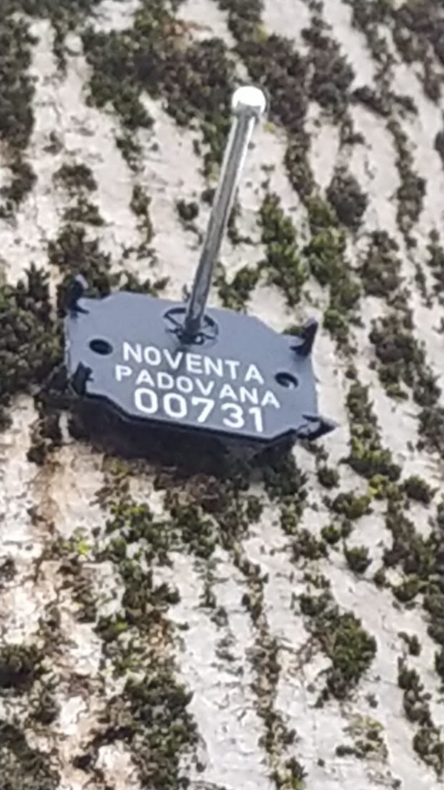
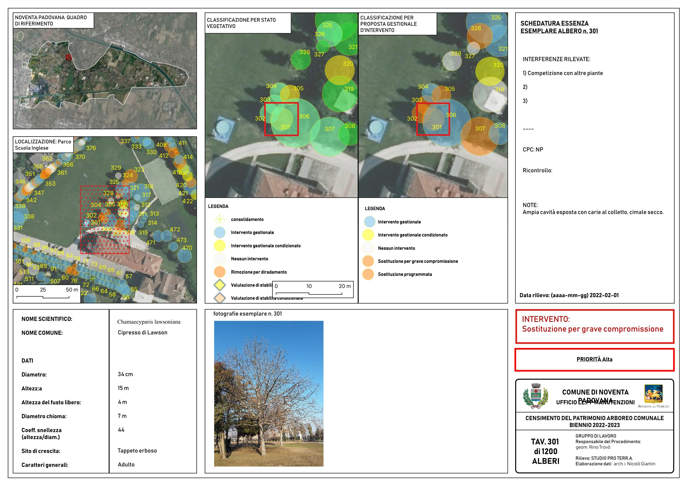
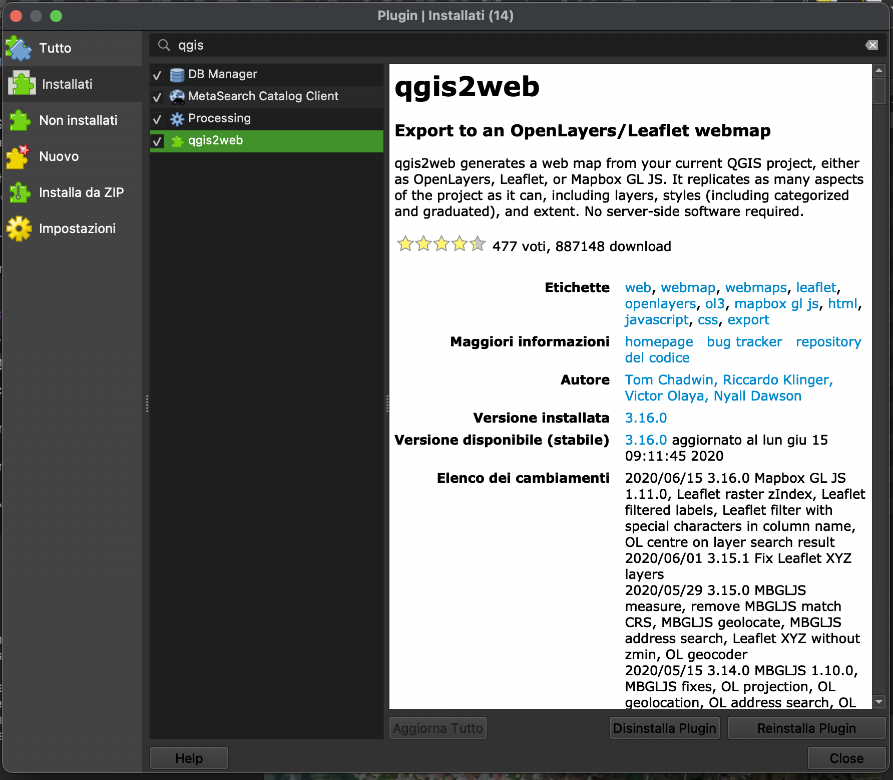
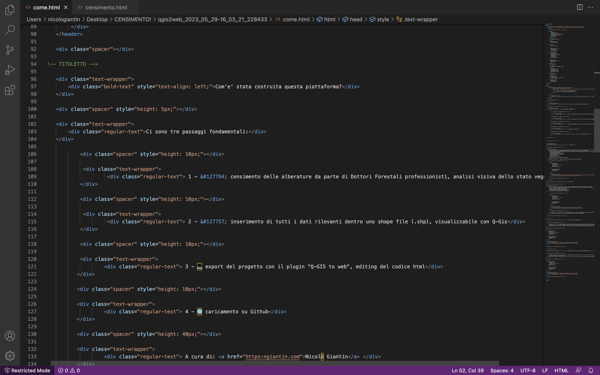

Com'e' stata costruita questa piattaforma?
Ci sono tre passaggi fondamentali:
1 - 🌲 censimento delle alberature da parte di Dottori Forestali professionisti, analisi visiva dello stato vegetativo
2 - 🌍 inserimento di tutti i dati rilevanti dentro uno shape file (.shp), visualizzabile con Q-Gis
3 - 💻 export del progetto con il plugin "Q-GIS to web", editing del codice html
4 - 🌐 caricamento su Github
La fase del censimento viene eseguita sul campo da parte di professionisti quali dottori forestali, agronomi e botanici.
Ogni singola pianta viene analizzata visivamente e, se necessario, in maniera approfondita.
In sede di sopralluogo vengono annotate su dispositivo mobile (tablet, pc portatile) le seguenti informazioni:
- coordinate geografiche
- ID numerico applicato all'albero
- nome scientifico e nome comune
- stato vegetativo
- priorità d'intervento
- interferenze
- note varie, altre informazioni pertinenti
Ad ogni alberatura verrà applicato un semplice tag di riconoscimento numerico.


2. Q-GIS
Terminata la fase di rilievo ed inserimento dati da parte dei tecnici incaricati,
si avrà a disposizione una notevole quanitità di informazioni che potranno essere elaborate per ottenere:
- quadro dello stato vegetativo delle piante
- quadro delle priorità degli interventi
- monitoraggio della sicurezza delle alberature
- stima economica "immediata" degli interventi


Si avrà così un quadro generale delle alberature pubbliche sul proprio pc in locale.
A questo punto si procederà con la fase di esportazione dei dati in formato html.
3. Utilizzo del pluing "qgis2web"
Il plugin gratuito "qgis2web" permette di esportare in formato Leaflet (libreria JavaScript per lo sviluppo di mappe geografiche interattive) il lavoro appena inserito su Qgis.
L'export fornirà così un file in formato html che, con un minimo di conoscenza informatica, potrà essere implementato in una pagina web.
Questo sito è stato creato con l'ausilio di Chat GPT, senza nessuna pregressa competenza informatica da parte dell'autore.


4. Caricamento del sito sulla piattaforma GITHUB (gratuito)
Per il caricamento del progetto sulla piattaforma di Github è stato fatto riferimento al seguente
video pubblicato dalla Dr.ssa Becky Seifried, corso di "Geospatial Information Librarian" presso University of Massachusets - Amherst (UMass Amherst),
materiale pubblicato all'indirizzo:
https://umass-gis.github.io/workshops/content/web-map/exercise.html
